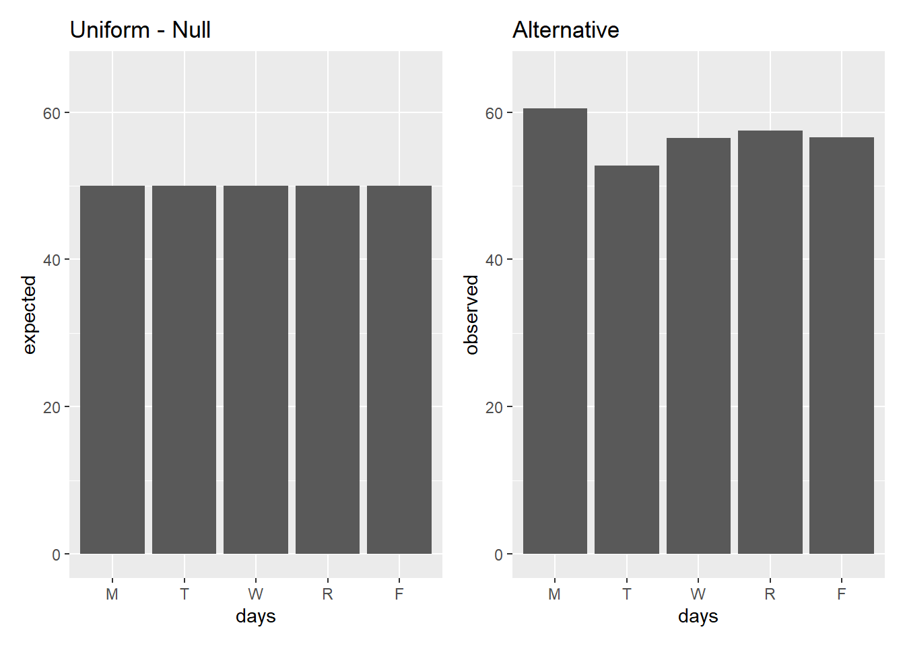
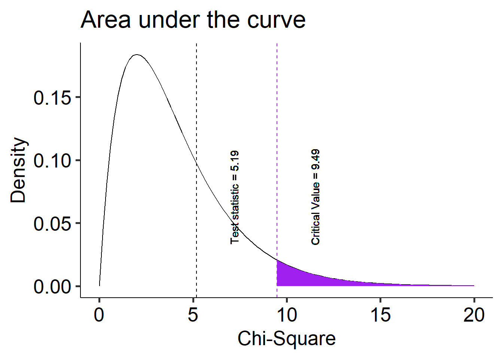
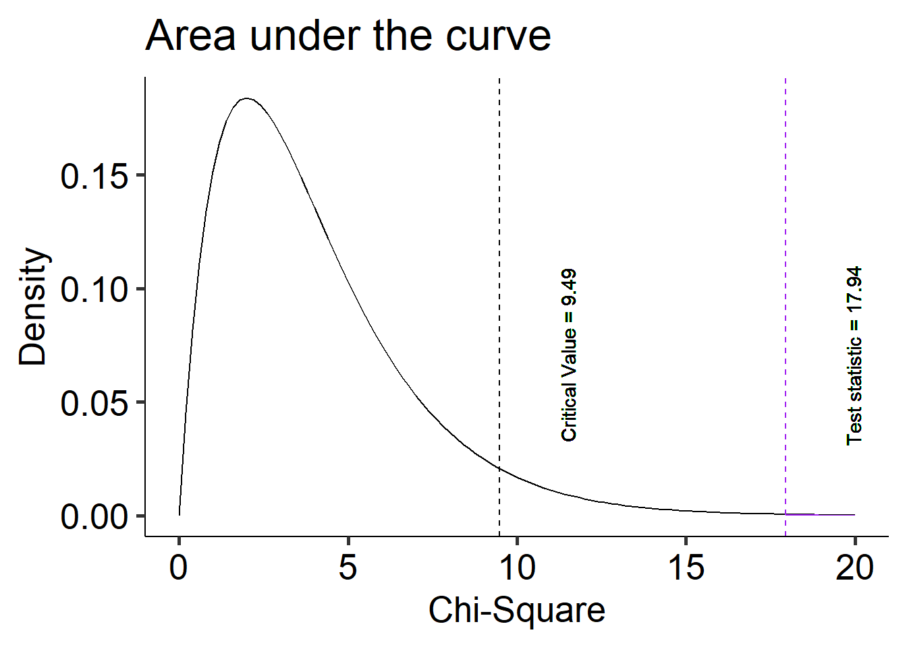

library(here)
library(tidyverse)
library(psych)
library(psychTools)
library(knitr)
library(kableExtra)
library(ggpubr)
library(patchwork)
set.seed(42)Categorical & One-Sample
PSYC 640 - Fall 2023
Last week
NHST & p-values
Lab 2…feedback?
Frequency of Labs check-in
This Week…
- The chi-square goodness-of-fit test
- One-sample t-tests
Key questions:
How do we know if category frequencies are consistent with null hypothesis expectations?
How do we handle categories with very low frequencies?
How do we compare one sample to a population mean?
What are the steps of NHST?
Define null and alternative hypothesis.
Set and justify alpha level.
Determine which sampling distribution ( \(z\), \(t\), or \(\chi^2\) for now)
Calculate parameters of your sampling distribution under the null.
- If \(z\), calculate \(\mu\) and \(\sigma_M\)
- Calculate test statistic under the null.
- If \(z\), \(\frac{\bar{X} - \mu}{\sigma_M}\)
- Calculate probability of that test statistic or more extreme under the null, and compare to alpha.
One-sample tests compare your given sample with a “known” population.
Research question: does this sample come from this population?
Hypotheses
\(H_0\): Yes, this sample comes from this population.
\(H_1\): No, this sample comes from a different population.
Example - Coffee Shop
Let’s say we collect data on customers of a coffee shop and we want to see if there is an equal number of folks that come into the shop across all days. Therefore, we record how many individuals came into the coffee shop over a weeks time.
How would we test this?
First, setup the Null and alternative:
\(H_0\): Customers will be equal across all days.
\(H_1\): There will be more customers on one or multiple days than others and will not be equal
Example - Distribution
Code
days <- c("M", "T", "W", "R", "F")
expected <- rep(50, length(days))
df <- data.frame(days, expected)
order <- c("M", "T", "W", "R", "F")
unif <- df %>%
ggplot(aes(x = days,
y = expected)) +
geom_col() +
scale_x_discrete(limits = order) +
labs(title = "Uniform - Null") +
ylim(0, 65)
observed <- round(rnorm(5, mean = 55, sd = 4),2)
df2 <- data.frame(days, observed)
rand <- df %>%
ggplot(aes(x = days,
y = observed)) +
geom_col() +
scale_x_discrete(limits = order) +
labs(title = "Alternative") +
ylim(0, 65)
(unif + rand)
Example - Set Alpha
After determining the Null and Alternative Hypotheses, we set our Alpha level.
Let’s keep things simple and keep it at convention to set it for \(\alpha\) = 0.05
Example - Distribution
Now we determine the type of distribution that we will be working with
In the past we have used:
Normal Distribution ( \(z\)-scores )
t-distribution ( \(t\)-scores )
Now we are going to be using a distribution that works with categorical (nominal) data.
The \(\chi^2\) - distribution
We use this distribution because we are dealing with (1) one sample, and (2) a categorical outcome
Note: this test will provide statistical evidence of an association or relationship between two categorical variables
??? The way you measure the variable determines whether it is categorical or continuous. We can create summary statistics from categorical variables by counting or calculating proportions – but that makes the summary statistics continuous, not the outcome variable itself.
Distribution - Degrees of freedom
The \(\chi^2\) distribution is a single-parameter distribution defined by it’s degrees of freedom.
In the case of a goodness-of-fit test (like this one), the degrees of freedom are \(\textbf{k-1}\), where k is the number of groups.
Degrees of freedom
The Degrees of freedom are the number of genuinely independent things in a calculation. It’s specifically calculated as the number of quantities in a calculation minus the number of constraints.
What it means in principle is that given a set number of categories (k) and a constraint (the proportions have to add up to 1), I can freely choose numbers for k-1 categories. But for the kth category, there’s only one number that will work.
The degrees of freedom are the number of categories (k) minus 1. Given that the category frequencies must sum to the total sample size, k-1 category frequencies are free to vary; the last is determined.
(critical_val = qchisq(p = 0.95, df = 5-1))[1] 9.487729Code
data.frame(x = seq(0,20)) %>%
ggplot(aes(x = x)) +
stat_function(fun = function(x) dchisq(x, df = 5-1), geom = "line") +
stat_function(fun = function(x) dchisq(x, df = 5-1), geom = "area", fill = "purple",
xlim =c(critical_val, 20)) +
geom_vline(aes(xintercept = critical_val), linetype = 2, color = "purple")+
geom_text(aes(x = critical_val+2, y = dchisq(critical_val, 5-1) + .05,
label = paste("Critical Value =", round (critical_val,2))), angle = 90)+
labs(x = "Chi-Square", y = "Density", title = "Area under the curve") +
theme_pubr(base_size = 20)
Calculating the \(\chi^2\) test statistic
Let’s first take a look at the observed data that we have as well as the expected data under the Null
observed <- df2
expected <- df| Monday | Tuesday | Wednesday | Thursday | Friday | ||
| Observed | \(O_i\) | 60.48 | 52.74 | 56.45 | 57.53 | 56.62 |
| Expected | \(E_i\) | 50 | 50 | 50 | 50 | 50 |
Now what? We need some way to index differences between these frequencies so that we can sensibly determine how rare or unusual the observed data are compared to the null distribution.
\[\chi^2_{df = k-1} = \sum^k_{i=1}\frac{(O_i-E_i)^2}{E_i}\]
The chi-square goodness of fit (GOF) statistic compares observed and expected frequencies. It is small when the observed frequencies closely match the expected frequencies under the null hypothesis. The chi-square distribution can be used to determine the particular \(\chi^2\) value that corresponds to a rare or unusual profile of observed frequencies.
| Monday | Tuesday | Wednesday | Thursday | Friday | ||
| Observed | \(O_i\) | 60.48 | 52.74 | 56.45 | 57.53 | 56.62 |
| Expected | \(E_i\) | 50 | 50 | 50 | 50 | 50 |
| Difference | \(O_i - E_i\) | 10.48 | 2.74 | 6.45 | 7.53 | 6.62 |
Code
chisq_tab <- full_join(expected, observed) %>%
mutate(diff = (observed - expected))
chisq_tab %>%
kable(., format = "html", digits = 2,
align = c("c", "c", "c", "c"),
col.names = c("Days", "Expected", "Observed", "Difference"))| Days | Expected | Observed | Difference |
|---|---|---|---|
| M | 50 | 60.48 | 10.48 |
| T | 50 | 52.74 | 2.74 |
| W | 50 | 56.45 | 6.45 |
| R | 50 | 57.53 | 7.53 |
| F | 50 | 56.62 | 6.62 |
We now have the differences between the expected and observed, but there are likely going to be some negative numbers. To fix this, we can square the differences
Code
chisq_tab %>%
mutate(sq_diff=(diff^2)) %>%
kable(., format = "html", digits = 2,
align = c("c", "c", "c", "c", "c"),
col.names = c("Days", "Expected", "Observed", "Difference", "Sq. Diff"))| Days | Expected | Observed | Difference | Sq. Diff |
|---|---|---|---|---|
| M | 50 | 60.48 | 10.48 | 109.83 |
| T | 50 | 52.74 | 2.74 | 7.51 |
| W | 50 | 56.45 | 6.45 | 41.60 |
| R | 50 | 57.53 | 7.53 | 56.70 |
| F | 50 | 56.62 | 6.62 | 43.82 |
Now we have a collection of numbers that are large whenever the null hypothesis makes a bad prediction and small when it makes a good prediction.
Next, we need to divide all numbers by the expected frequency as a way to put our estimate into perspective
Code
chisq_tab <- chisq_tab %>%
mutate(sq_diff=(diff^2)) %>%
mutate(error = sq_diff/50)
chisq_tab %>%
kable(., format = "html", digits = 2,
align = c("c", "c", "c", "c", "c", "c"),
col.names = c("Days", "Expected", "Observed", "Difference", "Sq. Diff", "Error Score"))| Days | Expected | Observed | Difference | Sq. Diff | Error Score |
|---|---|---|---|---|---|
| M | 50 | 60.48 | 10.48 | 109.83 | 2.20 |
| T | 50 | 52.74 | 2.74 | 7.51 | 0.15 |
| W | 50 | 56.45 | 6.45 | 41.60 | 0.83 |
| R | 50 | 57.53 | 7.53 | 56.70 | 1.13 |
| F | 50 | 56.62 | 6.62 | 43.82 | 0.88 |
We can finish this off by taking each of our scores related to “error” and adding them up
The result is the goodness of fit statistic (GOF) or \(\chi^2\)
chi_square <- sum(chisq_tab$error)
chi_square[1] 5.189316Let’s compare that to the critical \(\chi^2\) value given the df of the sample
critical_val <- qchisq(p = 0.95, df = length(chisq_tab$days)-1)
critical_val[1] 9.487729Calculate the probability of getting our sample statistic or greater if the null were true
p_val <- pchisq(q = chi_square, df = length(chisq_tab$days)-1, lower.tail = F)
p_val[1] 0.2684182What can we conclude?
The degrees of freedom are the number of categories (k) minus 1. Given that the category frequencies must sum to the total sample size, k-1 category frequencies are free to vary; the last is determined.
Code
data.frame(x = seq(0,20)) %>%
ggplot(aes(x = x)) +
stat_function(fun = function(x) dchisq(x, df = length(chisq_tab$days)-1), geom = "line") +
stat_function(fun = function(x) dchisq(x, df = length(chisq_tab$days)-1), geom = "area", fill = "purple",
xlim =c(critical_val, 20)) +
geom_vline(aes(xintercept = critical_val), linetype = 2, color = "purple")+
geom_vline(aes(xintercept = chi_square), linetype = 2, color = "black")+
geom_text(aes(x = critical_val+2, y = dchisq(critical_val, length(chisq_tab$days)-1) + .05,
label = paste("Critical Value =", round (critical_val,2))), angle = 90)+
geom_text(aes(x = chi_square+2, y = dchisq(critical_val, length(chisq_tab$days)-1) + .05,
label = paste("Test statistic =", round (chi_square,2))), angle = 90)+
labs(x = "Chi-Square", y = "Density", title = "Area under the curve") +
theme_pubr(base_size = 20)
The degrees of freedom are the number of categories (k) minus 1. Given that the category frequencies must sum to the total sample size, k-1 category frequencies are free to vary; the last is determined.
Code
data.frame(x = seq(0,20)) %>%
ggplot(aes(x = x)) +
stat_function(fun = function(x) dchisq(x, df = length(chisq_tab$days)-1), geom = "line") +
stat_function(fun = function(x) dchisq(x, df = length(chisq_tab$days)-1), geom = "area", fill = "purple",
xlim =c(chi_square, 20)) +
geom_vline(aes(xintercept = critical_val), linetype = 2, color = "black")+
geom_vline(aes(xintercept = chi_square), linetype = 2, color = "purple")+
geom_text(aes(x = critical_val+2, y = dchisq(critical_val, length(chisq_tab$days)-1) + .05,
label = paste("Critical Value =", round (critical_val,2))), angle = 90)+
geom_text(aes(x = chi_square+2, y = dchisq(critical_val, length(chisq_tab$days)-1) + .05,
label = paste("Test statistic =", round (chi_square,2))), angle = 90)+
labs(x = "Chi-Square", y = "Density", title = "Area under the curve") +
theme_pubr(base_size = 20)
Recap of the Steps
- Define null and alternative hypothesis.
\(H_0\): No difference across days
\(H_1\): Days will be different
Set and justify alpha level \(\alpha\) = 0.05
Determine which sampling distribution ( \(\chi^2\) )
Calculate parameters of your sampling distribution under the null.
- Calculate \(\chi^2\)-critical: 9.487729
Recap of the Steps (con’t.)
- Calculate test statistic under the null.
- \(\chi^2_{df = k-1} = \sum^k_{i=1}\frac{(O_i-E_i)^2}{E_i}\)
- 5.189316
Calculate probability of that test statistic or more extreme under the null, and compare to alpha.
pchisq(q = chi_square, df = length(chisq_tab$days)-1, lower.tail = F)[1] 0.2684182
Now that we know how to do the test using R, we now need to be able to write up the analyses that we just performed.
If we wanted to write these results from our example into a paper or something similar (maybe telling our pet who prefers scientific writing), we could do this:
Across all days of the average workweek, we observed, 60.48 patrons on Monday, 52.74 customers on Tuesday, 56.45 on Wednesday, 57.53 for Thursday, and finally 56.62 patrons on Friday. A chi-square goodness of fit test was conducted to test whether these data followed a uniform distribution with 50 visits per day. The results of the test ( \(\chi^2\)(4) = 5.19, \(p\) = 0.27) indicate no differences from the uniform distribution.
Across all days of the average workweek, we observed, 60.48 patrons on Monday, 52.74 customers on Tuesday, 56.45 on Wednesday, 57.53 for Thursday, and finally 56.62 patrons on Friday. A chi-square goodness of fit test was conducted to test whether these data followed a uniform distribution with 50 visits per day. The results of the test ( \(\chi^2\)(4) = 5.19, \(p\) = 0.27) indicate no differences from the uniform distribution.
A couple things to notice about the write up:
Before the test, there are some descriptives
Informs you of the null hypothesis
- Inclusion of a “stats block”
- Results are interpreted
But what if…
In the example, we had a null distribution that was distributed uniformly
What if that isn’t a super interesting research question?
Instead we may want to compare the proportions in our sample to a larger population
Example 2 - Schools & Super-powers
The data were obtained from Census at School, a website developed by the American Statistical Association tohelp students in the 4th through 12th grades understand statistical problem-solving.
The site sponsors a survey that students can complete and a database that students and instructors can use to illustrate principles in quantitative methods.
The database includes students from all 50 states, from grade levels 4 through 12, both boys and girls, who have completed the survey dating back to 2010.
Let’s focus on a single question:
Which of the following superpowers would you most like to have? Select one.
- Invisibility
- Telepathy (read minds)
- Freeze time
- Super strength
- Fly
The responses from 250 randomly selected New York students were obtained from the Census at School database.
school <- read_csv("https://raw.githubusercontent.com/dharaden/dharaden.github.io/main/data/example2-chisq.csv") %>%
filter(!is.na(Superpower))Code
school %>%
group_by(Superpower) %>%
summarize(Frequency = n()) %>%
mutate(Proportion = Frequency/sum(Frequency)) %>%
kable(.,
format = "html",
digits = 2) %>%
kable_classic(font_size = 25)| Superpower | Frequency | Proportion |
|---|---|---|
| Fly | 39 | 0.19 |
| Freeze time | 62 | 0.30 |
| Invisibility | 25 | 0.12 |
| Super strength | 13 | 0.06 |
| Telepathy | 67 | 0.33 |
Descriptively this is interesting. But, are the responses unusual or atypical in any way? To answer that question, we need some basis for comparison—a null hypothesis
One option would be to ask if the New York preferences are different compared to students from the general population.
Code
school_usa <- read_csv("https://raw.githubusercontent.com/uopsych/psy611/master/data/census_at_school_usa.csv")
school_usa$Region = "USA"
school %>%
full_join(select(school_usa, Region, Superpower)) %>%
filter(!is.na(Superpower)) %>%
group_by(Region, Superpower) %>%
summarize(Frequency = n()) %>%
mutate(Proportion = Frequency/sum(Frequency)) %>%
ggplot(aes(x = Region, y = Proportion, fill = Region)) +
geom_bar(stat = "identity", position = "dodge") +
coord_flip() +
labs(
x = NULL,
title = "Category Proportion as a function of Source") +
guides(fill = "none") +
facet_wrap(~Superpower) +
theme_bw(base_size = 20) +
theme(plot.title.position = "plot")
\(H_0\): New York student superpower preferences are similar to the preferences of typical students in the United States.
\(H_1\): New York student superpower preferences are different from the preferences of typical students in the United States.
Code
school %>%
full_join(select(school_usa, Region, Superpower)) %>%
mutate(Region = ifelse(Region == "NY", "NY", "USA")) %>%
filter(!is.na(Superpower)) %>%
group_by(Region, Superpower) %>%
summarize(Frequency = n()) %>%
mutate(Proportion = Frequency/sum(Frequency)) %>%
select(-Frequency) %>%
spread(Region, Proportion) %>%
kable(.,
col.names = c("Superpower", "NY Observed\nProportion",
"USA\nProportion"),
format = "html",
digits = 2)%>%
kable_classic(font_size = 25)| Superpower | NY Observed Proportion | USA Proportion |
|---|---|---|
| Fly | 0.19 | 0.23 |
| Freeze time | 0.30 | 0.25 |
| Invisibility | 0.12 | 0.20 |
| Super strength | 0.06 | 0.08 |
| Telepathy | 0.33 | 0.24 |
Calculating the \(\chi^2\) test statistic
To compare the New York observed frequencies to the US data, we need to calculate the frequencies that would have been expected if New York was just like all of the other states.
The expected frequencies under this null model can be obtained by taking each preference category proportion from the US data (the null expectation) and multiplying it by the sample size for New York:
\[E_i = P_iN_{NY}\]
| Superpower | Observed Freq | Expected Freq |
|---|---|---|
| Fly | 39 | 46.91 |
| Freeze time | 62 | 50.37 |
| Invisibility | 25 | 39.51 |
| Super strength | 13 | 15.80 |
| Telepathy | 67 | 47.41 |
Now what? We need some way to index differences between these frequencies, preferably one that translates easily into a sampling distribution so that we can sensibly determine how rare or unusual the New York data are compared to the US (null) distribution.
\[\chi^2_{df = k-1} = \sum^k_{i=1}\frac{(O_i-E_i)^2}{E_i}\]
The chi-square goodness of fit (GOF) statistic compares observed and expected frequencies. It is small when the observed frequencies closely match the expected frequencies under the null hypothesis. The chi-square distribution can be used to determine the particular \(\chi^2\) value that corresponds to a rare or unusual profile of observed frequencies.
ny_observed
Fly Freeze time Invisibility Super strength Telepathy
39 62 25 13 67 ny_expected
Fly Freeze time Invisibility Super strength Telepathy
46.91358 50.37037 39.50617 15.80247 47.40741 ny_observed
Fly Freeze time Invisibility Super strength Telepathy
39 62 25 13 67 ny_expected
Fly Freeze time Invisibility Super strength Telepathy
46.91358 50.37037 39.50617 15.80247 47.40741 (chi_square = sum((ny_observed - ny_expected)^2/ny_expected))[1] 17.94071ny_observed
Fly Freeze time Invisibility Super strength Telepathy
39 62 25 13 67 ny_expected
Fly Freeze time Invisibility Super strength Telepathy
46.91358 50.37037 39.50617 15.80247 47.40741 (chi_square = sum((ny_observed - ny_expected)^2/ny_expected))[1] 17.94071(critical_val = qchisq(p = 0.95, df = length(ny_expected)-1))[1] 9.487729ny_observed
Fly Freeze time Invisibility Super strength Telepathy
39 62 25 13 67 ny_expected
Fly Freeze time Invisibility Super strength Telepathy
46.91358 50.37037 39.50617 15.80247 47.40741 (chi_square = sum((ny_observed - ny_expected)^2/ny_expected))[1] 17.94071(critical_val = qchisq(p = 0.95, df = length(ny_expected)-1))[1] 9.487729(p_val = pchisq(q = chi_square, df = length(ny_expected)-1, lower.tail = F))[1] 0.001267462The degrees of freedom are the number of categories (k) minus 1. Given that the category frequencies must sum to the total sample size, k-1 category frequencies are free to vary; the last is determined.
Code
data.frame(x = seq(0,20)) %>%
ggplot(aes(x = x)) +
stat_function(fun = function(x) dchisq(x, df = length(ny_expected)-1), geom = "line") +
stat_function(fun = function(x) dchisq(x, df = length(ny_expected)-1), geom = "area", fill = "purple",
xlim =c(critical_val, 20)) +
geom_vline(aes(xintercept = critical_val), linetype = 2, color = "purple")+
geom_vline(aes(xintercept = chi_square), linetype = 2, color = "black")+
geom_text(aes(x = critical_val+2, y = dchisq(critical_val, length(ny_expected)-1) + .05,
label = paste("Critical Value =", round (critical_val,2))), angle = 90)+
geom_text(aes(x = chi_square+2, y = dchisq(critical_val, length(ny_expected)-1) + .05,
label = paste("Test statistic =", round (chi_square,2))), angle = 90)+
labs(x = "Chi-Square", y = "Density", title = "Area under the curve") +
theme_pubr(base_size = 20)
The degrees of freedom are the number of categories (k) minus 1. Given that the category frequencies must sum to the total sample size, k-1 category frequencies are free to vary; the last is determined.
Code
data.frame(x = seq(0,20)) %>%
ggplot(aes(x = x)) +
stat_function(fun = function(x) dchisq(x, df = length(ny_expected)-1), geom = "line") +
stat_function(fun = function(x) dchisq(x, df = length(ny_expected)-1), geom = "area", fill = "purple",
xlim =c(chi_square, 20)) +
geom_vline(aes(xintercept = critical_val), linetype = 2, color = "black")+
geom_vline(aes(xintercept = chi_square), linetype = 2, color = "purple")+
geom_text(aes(x = critical_val+2, y = dchisq(critical_val, length(ny_expected)-1) + .05,
label = paste("Critical Value =", round (critical_val,2))), angle = 90)+
geom_text(aes(x = chi_square+2, y = dchisq(critical_val, length(ny_expected)-1) + .05,
label = paste("Test statistic =", round (chi_square,2))), angle = 90)+
labs(x = "Chi-Square", y = "Density", title = "Area under the curve") +
theme_pubr(base_size = 20)
p.usa = (table(school_usa$Superpower)/sum(table(school_usa$Superpower)))
p.usa
Fly Freeze time Invisibility Super strength Telepathy
0.23456790 0.25185185 0.19753086 0.07901235 0.23703704 chisq.test(x = ny_observed, p = p.usa)
Chi-squared test for given probabilities
data: ny_observed
X-squared = 17.243, df = 4, p-value = 0.001733The New York student preferences are unusual under the null hypothesis (USA preferences).
Note that the chisq.test function takes for x a vector of the counts. In other words, to use this function, you need to calculate the summary statisttic of counts and feed that into the function.
c.test = chisq.test(x = ny_observed, p = p.usa)
str(c.test)List of 9
$ statistic: Named num 17.2
..- attr(*, "names")= chr "X-squared"
$ parameter: Named num 4
..- attr(*, "names")= chr "df"
$ p.value : num 0.00173
$ method : chr "Chi-squared test for given probabilities"
$ data.name: chr "ny_observed"
$ observed : 'table' int [1:5(1d)] 39 62 25 13 67
..- attr(*, "dimnames")=List of 1
.. ..$ : chr [1:5] "Fly" "Freeze time" "Invisibility" "Super strength" ...
$ expected : 'table' num [1:5(1d)] 48.3 51.9 40.7 16.3 48.8
..- attr(*, "dimnames")=List of 1
.. ..$ : chr [1:5] "Fly" "Freeze time" "Invisibility" "Super strength" ...
$ residuals: 'table' num [1:5(1d)] -1.341 1.405 -2.46 -0.812 2.6
..- attr(*, "dimnames")=List of 1
.. ..$ : chr [1:5] "Fly" "Freeze time" "Invisibility" "Super strength" ...
$ stdres : 'table' num [1:5(1d)] -1.533 1.624 -2.746 -0.846 2.977
..- attr(*, "dimnames")=List of 1
.. ..$ : chr [1:5] "Fly" "Freeze time" "Invisibility" "Super strength" ...
- attr(*, "class")= chr "htest"c.test$residuals
Fly Freeze time Invisibility Super strength Telepathy
-1.3408927 1.4047879 -2.4598546 -0.8121473 2.6002917 lsr::goodnessOfFitTest(x = as.factor(school$Superpower), p = p.usa)
Chi-square test against specified probabilities
Data variable: as.factor(school$Superpower)
Hypotheses:
null: true probabilities are as specified
alternative: true probabilities differ from those specified
Descriptives:
observed freq. expected freq. specified prob.
Fly 39 48.32099 0.23456790
Freeze time 62 51.88148 0.25185185
Invisibility 25 40.69136 0.19753086
Super strength 13 16.27654 0.07901235
Telepathy 67 48.82963 0.23703704
Test results:
X-squared statistic: 17.243
degrees of freedom: 4
p-value: 0.002 (Note that this function, goodnessOfFitTest, takes the raw data, not the vector of counts.)
What if we had used the equal proportions null hypothesis?
lsr::goodnessOfFitTest(x = as.factor(school$Superpower))
Chi-square test against specified probabilities
Data variable: as.factor(school$Superpower)
Hypotheses:
null: true probabilities are as specified
alternative: true probabilities differ from those specified
Descriptives:
observed freq. expected freq. specified prob.
Fly 39 41.2 0.2
Freeze time 62 41.2 0.2
Invisibility 25 41.2 0.2
Super strength 13 41.2 0.2
Telepathy 67 41.2 0.2
Test results:
X-squared statistic: 52.447
degrees of freedom: 4
p-value: <.001 Why might this be a sensible or useful test?
Write-up Practice
Open up a word document and provide a 2-6 sentence write up of the analyses that we just completed
Don’t forget:
Before the test, there are some descriptives
Information about the the null hypothesis
Including a “stats block”
Brief interpretation of the results
The usefulness of \(\chi^2\)
How often will you conducted a \(chi^2\) goodness of fit test on raw data?
- (Probably) never
How often will you come across \(\chi^2\) tests?
- (Probably) a lot!
The goodness of fit test is used to statistically test the how well a model fits data.
Model Fit with \(\chi^2\)
To calculate Goodness of Fit of a model to data, you build a statistical model of the process as you believe it is in the world.
- example: depression ~ age + parental history of depression
Then you estimate each subject’s predicted/expected value based on your model.
You compare each subject’s predicted value to their actual value – the difference is called the residual ( \(\varepsilon\) ).
If your model is a good fit, then
\[\Sigma_1^N\varepsilon^2 = \chi^2\]
We would then compare that to the distribution of the Null: \(\chi^2_{N-p}\) .
Significant chi-square tests suggest the model does not fit – the data have values that are far away from “expected.”
When we move from categorical outcomes to variables measured on an interval or ratio scale, we become interested in means rather than frequencies. Comparing means is usually done with the t-test, of which there are several forms.
The one-sample t-test is appropriate when a single sample mean is compared to a population mean but the population standard deviation is unknown. A sample estimate of the population standard deviation is used instead. The appropriate sampling distribution is the t-distribution, with N-1 degrees of freedom.
\[t_{df=N-1} = \frac{\bar{X}-\mu}{\frac{\hat{\sigma}}{\sqrt{N}}}\]
The heavier tails of the t-distribution, especially for small N, are the penalty we pay for having to estimate the population standard deviation from the sample.
Next up…
Further dive into categorical data analysis
Starting with t-tests